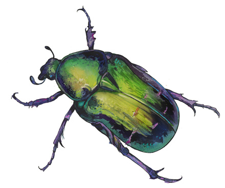

本手册/文档采用 Qwen3.5 + 人工方式翻译。每周检查一次原仓库或手动更新，欢迎 Star 和 PR。译者前言：
- 鼠标悬浮在中文上会出现英文原文，方便读者在觉得翻译质量不行的时候直接查看原文（欢迎 PR 更好的翻译）。
- 因为有些接口需要上下文，因此译者增加了注释以对此进行额外的说明，以灰色背景块显示出来，代表了译者对某个接口的理解。
- 如果你觉得我的工作有帮助，可以 赏杯咖啡钱 。
- 欢迎关注我的技术/生活公众号「开二度魔法」，id：CoderXheldon
系统指南
本指南以叙述形式描述了 Wordgard 的设计和功能。如需编程接口的逐项文档，请参阅参考手册。如需系统特定部分的更详细描述，请查看示例。
Wordgard 是一个注重可定制性的富文本编辑器系统。其设计用途是编辑符合特定模式的内容，而非通用的所见即所得或 HTML 编辑器。它致力于提供受所见即所得启发的界面，但使用语义概念（如标题、列表、强调）而非表现概念（如字体族、段落缩进、粗体文本）来描述内容和编辑操作。
简介
该库提供的核心内容是一个用户界面组件，由 Wordgard 类实现。此组件用于在网页文档中显示编辑器。
它还定义了一组用于定义文档、编辑器状态和编辑器操作的抽象，其中大部分可在浏览器之外使用。
要开始使用 Wordgard，您需要从 npm 安装 "wordgard" 包。该库实际上由该包内的几个独立模块组成，名称类似于 "wordgard/editor" 或 "wordgard/doc"。您需要从这些模块导入以使用该库。以下代码设置了一个基本编辑器：
import {Wordgard, menuBar} from "wordgard/editor"
import {fullSchema} from "wordgard/schema"
import {history} from "wordgard/history"
let editor = Wordgard.create({
doc: `<p>Starting content</p>`,
config: [
fullSchema(), // 预定义的文档模式
history(), // 启用撤销历史记录
menuBar() // 显示菜单
],
parent: document.body
})
在使用本库进行非平凡的工作时，强烈建议使用 TypeScript。各部分以相当复杂的方式相互关联，拥有可靠的自动补全和类型错误提示将为您节省大量时间。
该系统中的主要概念包括：
编辑器使用的自定义文档数据结构。虽然支持向 HTML 转换及从 HTML 转换，但编辑器使用自定义的不可变树类型来存储其内容。
模式规定了编辑器内容可能呈现的形式。该库附带了一组预定义的模式元素（如段落、列表、链接、图片、强调文本等），您可以定义自己的模式以支持其他类型的内容。
编辑器由一组扩展进行配置。这些扩展几乎决定了其所有行为，从模式到可见的 UI 元素，再到浏览器事件的处理方式。
编辑器状态保存了配置、当前文档、选区以及需要跟踪以表示编辑状态的任何其他值。扩展可以包含其自身的状态片段。状态变更通过事务发生，事务是包含变更精确描述的對象。
编辑器组件在浏览器文档中显示编辑器状态，并帮助用户交互转换为状态事务。
由于该系统非常开放，且尽可能多的功能均通过公共编程接口编写，因此完整的 API 规模相当庞大。对于简单应用而言，您只需掌握少数几个概念即可。但当您确实需要实现雄心勃勃的自定义功能时，系统也完全能够支持。
本库积极使用 TypeScript 命名空间 来嵌套相关功能。这有时可能显得不太常规，但我发现它有助于避免过长的导入列表，并通过自动补全功能更轻松地查找内容。
文档
Wordgard 文档是一棵树，列表或表格等嵌套结构在树结构中得以表示（列表中的段落实际上以该列表作为其父节点）。修改文档涉及创建一棵新树，尽管这棵树通常会与原文档共享大量节点。
值类型
尽管文档树的结构在表面上与浏览器的 DOM 相似，但其使用方式却截然不同。它采用值语义，这意味着节点对象表示文档结构的一部分，但不具有显著的标识性。给定对象永远不会改变，因此当节点或其内容被更新时，会创建一个新的对象。同样，同一个节点对象也可能在文档中出现多次。出于这些原因，您不能使用给定节点的 JavaScript 对象作为识别该特定节点的有效方式。您应该改用文档偏移量。
节点没有父指针。由于它们将在文档的更改版本中重复使用，因此它们没有单一的稳定父节点。
同样地，您无法更改节点。您可以通过应用更改来创建新文档，从而修改文档，但没有任何针对孤立节点的setAttribute或removeChild操作。
树形结构
Wordgard 定义了两类节点：
Plots 包含内容。它们包含文档的一部分，并通常为其赋予某种含义（例如，它是标题、列表或表格）。文档本身就是一个 plot。
Leaves 是没有内容的节点。它们代表换行符、图像和文本等内容。
采用外来术语"plot"是出于以下原因：在计算机科学传统中，没有简洁的词汇来指代内部树节点（相对于外部叶节点），而将文档比喻为由包含叶子的"plot"组成，恰好契合该库的花园主题。
这两种节点类型由不同的对象类型表示（Plot 和 Leaf）。许多系统为两者提供了大致兼容的接口，但我发现它们之间的差异往往足够显著，因此强制进行清晰区分，可以在处理节点时避免大量类别错误。
每个节点都关联有一个 类型。该类型描述了节点是叶子节点还是图节点，是块级节点还是行内节点，如何将其转换为 HTML 或从 HTML 转换回来，以及（如果是图节点）它允许包含哪些内容等。节点类型可以允许一个参数，该参数是存储在节点中的一个值。例如，标题图节点可以使用该参数来指定标题级别，或者图像叶子节点可以使用它来指定图像 URI。
在类型和参数之上，每个节点还可以存储一组标记。这些标记的作用类似于附加参数，但它们是在节点类型之外单独定义的。这种机制用于处理内联样式（如强调、链接、上标）、文本对齐、图片替代文本等。与节点类似，标记也具有类型和参数。
文本节点是一种特殊的叶子节点。它们具有固定的、内置的叶子类型，其参数即为文本内容。当两个相邻的文本节点拥有相同的标记时，它们会自动合并，从而确保具有相同样式的文本片段始终作为一个单独的叶子节点存在。
在本系统中，术语 标签 指的是节点的标记：节点类型、参数以及一组标记。对于叶子节点而言，这就是节点的全部内容。一个图表由一个图表标签和一个内容节点数组组成。
该图展示了 Wordgard 节点表示法的示意图。蓝色方框表示标签（其内容位于下方），紫色方框表示叶子节点。白色方框代表叶子节点或标签的参数，橙色方框则表示标记。
在编程模型中，图表是类型为 Plot 的对象，具有 tag 和 content 属性。内容包含其他图表或 Leaf 节点。叶子节点和图表标签都具有 type、param 和 marks 属性。
在节点和标签/叶对象上，可以使用 isPlot/isLeaf 属性来判断该对象是图还是叶。在 TypeScript 中，此检查会自动缩小类型，以便您可以访问其特定的叶或图属性。
该库区分行内内容和块级内容，因此每个节点都被标记为行内节点或块级节点。给定图表的内容必须全部由行内节点组成，或全部由块级节点组成。术语textblock用于指代包含行内内容的块级节点（例如段落、标题或代码块）。
文档表示法的设计确保给定文档具有唯一的规范表示。与 HTML 中内联样式标签的自由嵌套不同，标记结构是扁平的，且标记以确定性方式排序。这使得比较和推理内容变得更加容易。
指标体系
为了能够引用内容中的位置，Wordgard 使用一种索引系统，为文档中的每个位置分配一个编号。该系统在概念上从文档开头开始对标记进行计数，其工作原理如下：
文档的开头，即第一个内容之前，位于位置 0。
每个图块都有一个开始标记和一个结束标记。因此，进入或离开一个图块会使索引增加 1。
文本叶节点中的每个（UTF16）字符计为一个令牌。因此，如果文档开头的一个段落包含单词“hi”，则位置 1 是该段落的起始位置，位置 2 在“h”之后，位置 3 在“i”之后，位置 4 在整个段落之后。
非文本叶子节点始终计为单个令牌。
因此，如果您有一份文档，其 HTML 表现形式如下：
<blockquote><p>Text <img src="..."></p></blockquote>
带位置的令牌序列如下所示：
0 1 2 3 4 5 6 7 8 9 10
<blockquote> <p> T e x t _ <img> </p> </blockquote>
每个节点都有一个 length 属性，用于获取整个节点的大小。图表还具有一个 contentLength 属性，表示其内容的总长度。对于普通图表，其总长度等于内容长度加二。文档图表则有所不同——由于其起始/结束标记不属于实际文档的一部分，因此其长度等于其内容长度。
手动解析此类位置涉及大量的计数工作。有一个已解析位置抽象，可直接提供给定文档位置的上下文。通过调用doc.resolve(pos)即可获得该抽象，它将告知您当前位置在其父节点中的位置、该父节点的起始位置、还有哪些更高层的祖先节点、哪些节点直接位于该位置旁边，等等。
遍历文档的节点或特定范围内的节点通常很有用。为此，您可以调用 iterate，或者创建一个已解析的位置并向前 walk。
变更
要修改 Wordgard 文档，您需要创建一个 变更集，然后 应用 该变更集，从而获得已修改的文档。新文档和旧文档通常会共享大部分内部节点。
更改通过文档位置进行指定。ChangeSet.create 接受一个 对象集合，用于描述这些更改（创建编辑器事务时使用相同的格式）。
假设该文档是一个包含单词"sage"的段落。以下是一些对其进行修改的可能方法：
let delS = ChangeSet.create(doc, {from: 1, to: 2})
let addWord = ChangeSet.create(doc, {
from: 1,
insert: [Leaf.text("meadow ")]
})
let replace = ChangeSet.create(doc, {
from 1, to: 5,
insert: [Leaf.text("...")]
})
let multiple = ChangeSet.create(doc, [
{from: 1, insert: [Leaf.text("(")]},
{from: 5, insert: [Leaf.text(")")]}
])
变更规范可以是单个变更或一个变更数组（它也可以包含现有的变更集对象）。内容变更可以指定起始位置和可选的结束位置，并删除该范围，或者通过提供要插入的令牌数组，在给定位置插入内容。
令牌可以是节点。但有时您不仅需要插入整个节点，还需要在特定位置结束或开始一个绘图。因此，令牌也可以是绘图开启令牌（使用绘图标签对象），或是特殊的 Plot.End 令牌，用于关闭当前绘图。例如，要在示例文档中间创建一个段落换行，您可以这样做：
let paraBreak = ChangeSet.create(doc, {
from: 2,
insert: [Plot.End, Paragraph]
})
其中 Paragraph 是段落节点的绘图标签。一组标记被称为 切片，这也是在 迭代 集合中的更改时用于替换的对象类型。
在同时指定多个更改时，您无需为其他更改补偿更改位置。所有位置均基于初始文档进行指定。例如，在位置 1 和 5 插入括号的更改会将括号置于整个单词周围，因为该单词在原始文档中跨越 1 到 5。
更改还可以在不替换底层内容的情况下添加或删除标记。当更改对象具有 add 或 remove 属性时，它属于修改性（而非替换性）更改。
let makeStrong = ChangeSet.create(doc, {
from: 1, to: 5,
add: Strong
})
其中 Strong 是表示强调的标记。
变更更正
可以创建会破坏文档结构的变更。例如，如果您尝试删除段落的起始标记而不替换任何内容，这将导致文档的标记结构失衡，因此无法应用。同样，如果您尝试将节点放置在不允许的位置，则该变更无效。此类变更可以被创建，但在应用时会抛出异常。
通常，您知道所创建的变更类型是有效的。但如果您不确定，可以让 ChangeSet.create 为您检查并修复该变更。实现这一点有两种方法。第一种是在特定变更上设置 fit 属性。这将授权 ChangeSet.create 调整变更的范围，将其扩展以覆盖绘图开始和结束标记（如果这样能改善匹配度），并激活一种校正机制，通过必要时丢弃变更或添加绘图开始/结束标记，确保文档保持有效。
此外，还可以通过将一组变更包装在{correct: changes}对象中，来仅激活更正功能。这将首先合并给定的变更，然后确保生成的变更有效。如果向该对象添加local: true属性，更正策略将尝试使其更正尽可能接近原始变更。
映射
变更集支持位置映射，它可将旧文档中的位置调整为新文档中对应的位置。这一功能在系统中至关重要，例如，它能确保在文档变更时选区保持在正确位置，并允许其他位置数据（如文档装饰）在变更过程中被持续跟踪。
当内容在映射位置处插入时，新位置是在该内容之前还是之后，取决于您正在跟踪的内容类型。作为mapPos的第二个参数，您可以设置映射的关联性。
在某些情况下，当位置附近的内容被删除时，您可能希望将该位置视为已删除并停止跟踪它。mapPos 的可选第三个参数允许您提供跟踪模式，指示该方法在位置之前、之后或两侧的元素被删除时，返回 null 而不是新位置。
此外，还可以将一个变更集 转换 到另一个变更集之上。如果您有两个从同一文档开始的变更 A 和 B，您可以将 B 转换到 A 之上，从而生成一个可应用于由 A 创建的文档的 B 版本。
let a = ChangeSet.create(doc, {from: 1, insert: [Leaf.text("a")]})
let b = ChangeSet.create(doc, {from: 5, insert: [Leaf.text("b")]})
// 在位置 6 插入一个 'b'
let b2 = b.transform(doc, a)
let doc2 = b2.apply(a.apply(doc))
此类转换可能需要应用自身的修正，当变更以会产生无效变更的方式发生冲突时。如果您将两个变更相互转换，库会确保在两者中应用相同的修正，因此，如果您在一个转换中将第二个参数（该参数决定冲突插入的顺序）设置为 true，而在另一个中设置为 false，那么依次应用它们后将产生相同的文档。
有一个简写函数 ChangeSet.transform 用于执行此类相互转换。
let {a: a2, b: b2} = ChangeSet.transform(doc, a, b)
assert(b2.apply(a.apply(doc)).eq(a2.apply(b.apply(doc))))
此功能支持简单的操作转换类型。在创建变更集或修改事务以将变更移至正确的文档坐标系时，以及由撤销历史合并可撤销与不可撤销的变更时，也会使用此功能。
模式
文档模式列出了允许出现在符合该模式的文档中的节点和标记类型的集合，并指定了它们之间的关系——哪些节点可以出现在哪些图中，以及哪些标记可以出现在哪些标签上。文档节点存储对模式的引用，并确保其内容在创建时符合该模式。
这意味着您的文档（及编辑器）仅包含您明确允许的内容元素。Wordgard 假定您有一组特定的结构需要允许，并基于这些结构来定义您的文档。
您可以通过将所有元素添加到编辑器配置中并让编辑器状态创建模式，或者提前构建模式，并在创建状态时传入一个使用该模式的文档来配置您的模式。
图表类型
构成模式的元素包括叶节点、情节和标记类型。"wordgard/types" 模块提供了一组基本模式元素，但您也可以定义自己的元素。例如，"aside"情节的定义可能如下所示：
const Aside = Plot.define("Aside", {
blockContent: Node.Group.Content,
group: Node.Group.Content,
shape: {element: "aside"}
})
每个节点或标记类型都有一个名称字符串（本例中为 "Aside"），该名称将用于文档的 JSON 序列化格式及其 toString 输出，后者在调试时可能很有用。这些名称在模式中必须是唯一的。
一个图块需要指明它所支持的内容。在本例中，我们使用了 Content 节点组，它表示通用的块级内容。节点组是可以附加到节点上的标签——您可以看到我们将相同的组分配给了我们的新图块——作为一种分类方式。blockContent 字段接受一个 节点查询，该查询可以是一个组、一个精确的节点类型或标签，也可以是其他查询的并集或交集。
每个模式元素都必须定义一个 HTML/DOM 形状。在这种情况下，我们只需将图表的内容包装在一个 <aside> 元素中，声明该元素后，库即可推导出图表的序列化和解析逻辑。当存在需要序列化的参数以及需要创建和解析的 DOM 属性时，这一过程需要更加复杂。在某些情况下，您只需直接指定格式 直接，并手动编写 解析规则 以匹配该元素。
上述 Plot.define 调用将创建一个 绘图标签，而非类型。由于此绘图类型不接受任何参数，您通常应将其作为标签而非类型使用。为了方便起见，该库允许您在许多接受类型的地方传入标签。
对于确实需要参数的图表类型，您应使用 Plot.Type.define 代替 Plot.define，从而获得图表类型作为结果。此类类型对象拥有一个 of 方法，该方法可根据类型和参数创建标签。
这就是一个定义对话气泡样式的图表类型可能呈现的样子，其中说话角色的名称作为参数：
const SpeechBubble = Plot.Type.define<string>("SpeechBubble", {
inlineContent: true,
group: Node.Group.Content,
validate: "string",
defining: true,
shape: {
element: "speech-bubble",
attributes: param => ({"data-character": param}),
readElement: elt =>
elt.getAttribute("data-character") ?? parse.Reject
}
})
即使使用参数定义的类型，也可以在未提供显式参数时指定要使用的默认参数。使用默认参数定义的类型或作为单例定义的类型，都具有一个包含其默认标签的default属性。
还有其他多种可用的图表类型选项，例如上面使用的defining。建议您查阅Plot.Spec的参考文档以了解这些选项。
叶片类型
叶子的定义方式非常相似。例如，定义恐龙叶子类型的方法如下：
const Dinosaur = Leaf.Type.define<string>("Dinosaur", {
inline: true,
validate: "string",
shape: {
element: "wordgard-dinosaur",
attributes: name => ({"data-dino": name}),
readElement: elt => elt.getAttribute("data-dino")
},
selectable: true
})
内联节点（包括图表和叶子节点）必须在定义中将 inline 属性设置为 true。
当类型具有参数时，建议定义一个 validate 属性，该属性要么以字符串形式指定有效类型，要么提供一个验证函数。这有助于 JSON 反序列化器确保不会创建具有无效参数的节点。
由于该叶子节点包含一个参数，因此该形状既定义了将其序列化为属性的方法，也定义了解析时从元素中读取它的方法。
selectable 标志告知库该叶子节点可被选中。通过光标导航时，选择将停留在该节点上，点击它即可选中。
标记类型
标记的定义方式与节点非常相似，同样提供了 Mark.define（用于开关式标记，如 Strong）和 Mark.Type.define（用于带参数的标记，如 Link）。
标记形状可以是包装元素或属性。例如，Strong 将其目标节点包装在 <strong> 元素中，而 ImageAlt 则设置其 alt 属性。此类定义如下所示：
export const Strong = Mark.define("Strong", {
rank: 60,
shape: {element: "strong"},
})
export const ImageAlt = Mark.Type.define<string>("ImageAlt", {
target: [Image, Figure, CaptionedFigure],
validate: "string",
shape: {attribute: "alt", value: 0, preferTarget: "img"}
})
每个标记都可以提供一个 rank，以影响其在标记 集合 中相对于其他标记的排序方式。这对于渲染包装元素的标记尤为重要，因为它决定了当单个节点具有多个此类标记时，这些元素的嵌套顺序。
仅将参数原样存储在属性中的属性形状可以通过value: 0来指示这一点。当需要更复杂的转换时，同样可以定义自定义函数来创建和解析该属性。
在属性形状中，可以指定首选目标。在 ImageAlt 的情况下，图形会将图像包裹在 <figure> 元素中，并且图像也可能被配置为渲染额外的包装器。但是，当 alt 属性不在 <img> 元素上时，它是没有意义的，因此我们需要针对该元素，而不是节点的外部元素。
Another important property of a mark type is whether it is spanning. Some types of marks, such as image alt
text, refer to a specific node, and have nothing to do with the nodes
around that. Others, like strong emphasis, conceptually apply to a
stretch of content. When adjacent nodes all have the Strong
mark, the <strong> element should wrap them all, rather than each
individually. Text nodes can only have spanning marks, because they
are not really individual nodes in the sense of other nodes, but
rather stretches of characters that happen to be grouped because they
are adjacent to each other.
上述定义无需显式设置 spanning，因为对于使用元素形状定义的标记，其默认值为 true，而对于使用属性形状定义的标记，其默认值为 false。但如果您想定义一个具有包装属性的非跨行节点，则需要显式设置该属性。
Mark.Spec 中还有一些其他字段可用于配置标记的行为。您可以查看这些字段是否适用于您正在定义的标记。
架构覆盖
图表类型定义其自身的内容，而标记类型定义它们适用的节点。但由于这些属性涉及模式中元素的组合方式，特定的模式可能需要对其进行调整。这正是模式覆盖（最后一种模式元素类型）的用途。
您可以使用 Schema.Override.plotContent 替换特定图表的内容查询，使用 Schema.Override.markTarget 配置标记所应用的节点，以及使用 Schema.Override.nodeGroup 更改节点所属的组集合。将生成的对象包含在架构配置中即可将其应用于该架构。
正是由于这些覆盖机制，像 matchNode、markAllowed 和 canContain 这样用于查询这些关系的方法才存在于模式（schema）上，而不是节点或标记类型上。
编辑器状态
来自 "wordgard/state" 的 GardState 类实现了用于保存编辑器状态的对象。此类对象同样是不可变的，因此给定状态不会改变，您可以将先前的状态与新状态进行比较，以查看其某些方面是否已更新。
状态主要跟踪的是当前 文档、选区 以及编辑器 配置。编辑器拥有一个 当前状态，您可以通过访问该状态来获取这些字段。
可以通过 GardState.create 创建编辑器状态。您需要提供一个初始文档、一个可选的初始选区以及一个配置，它将返回一个状态。如果配置中定义了模式，则文档可以是 HTML 字符串或一段 DOM 结构。如果没有定义模式，则必须传入一个文档图（document plot）以提供您的模式。
let state = GardState.create({
doc: `<h1>Hi!</h1>`,
config: basicSchema()
})
要“重置”编辑器状态（例如在将新文档加载到编辑器时），您应该创建一个全新的状态，而不是尝试将旧状态更新为新文档。
交易
更新状态是通过创建 事务 来完成的，可以通过 state.update 或直接调用编辑器上的 dispatch 来实现。此类事务精确描述了需要更新的内容，并可供任何观察或处理编辑器变更的代码使用，从而使这些代码能够获取关于该变更所需的全部信息。
选择中存储的内容包括：
一组文档变更。如果事务未进行任何更改，则包含空集。
一个可选的显式设置的选择。如果未设置选择，则此属性为 null。
newSelection将始终包含事务后的选择，无论是显式设置还是从现有选择映射而来。- 一组注解，这些是可以附加到事务上的元数据。将包含创建该选择时的时间，并且通常包含一个用户事件标签。
一组自定义的 效果，这些效果是用户可定义的值，用于描述事务产生的某些附加影响，例如将某个元素滚动至可视区域或打开一个对话框。
交易创建的新状态可在其 state 属性 中获取。
事务是通过 Transaction.Spec 对象创建的，该对象允许您以简单的对象字面量形式提供这些字段。
let tr = state.update({
changes: {from: 10, insert: Image.of("bee.jpg")},
selection: {anchor: 11},
userEvent: "insert.bee",
scrollIntoView: true
})
scrollIntoView 字段会在事务上设置一个标志，指示编辑器在事务分发后将光标滚动到可视区域。大多数（但并非全部）编辑操作都需要设置此标志。
可以注册影响所有事务的扩展。事务扩展器（transaction extender）可以修改单个事务，这对于添加元数据（如注释（annotations）或效果（effects））或修复不需要的文档结构非常有用。事务追加器（Transaction appenders）可以在给定事务被分发后注入额外的事务。
选择
Wordgard 选择对象是继承自 GardSelection 的对象。"wordgard/state" 模块定义了两类选择，其他代码也可以 定义 自定义类型。
每个选择都有一个 锚点（其固定点所在的位置）和一个 头部（其可移动侧的位置）。对于光标选择，这两者可能相同。此外，还有 from/to 属性，可直接获取下界或上界。
文本选择是用于普通选择的类型。它们可以选择性地存储一组标记，以应用于通过该选择插入的内容（例如，当没有文本被选中时切换强调标记时就会用到）。
选择位置可以是文档中的任意点，包括块之间。由库创建的选择（无论是用于键盘光标移动、指针事件还是响应更改）通常是“常规”光标选择，它们是文档位置的子集，并且仅包含使某些类型的编辑成为必要的块位置。请参阅 nextNormalCursor 方法。
节点选择 用于选择单个可选择的叶节点。它们拥有一个node属性，用于保存该节点。
作为自定义选择的示例，表格模块定义了一种单元格选择类型，该类型覆盖一个矩形区域的表格单元格。
编辑器状态具有一个 sel 属性，为了方便起见，该属性保存了选区的 解析后 版本，其 anchor/head/from/to 属性可提供 解析后的位置。
配置
"wordgard/state" 模块定义了一组通用的配置原语。
创建状态时提供的 config 字段 的类型为 GardState.Extension，其定义方式如下，略显神秘：
type Extension = {extension: Extension} | Extension[]
阅读此段的方式是：该库通过对象类型定义了一些被视为扩展的内置类型，而一个扩展可以是单个此类预定义的扩展、一个在 extension 字段中包含扩展的自定义对象，或者是一个由扩展值数组构成的树。
能够在对象类型上提供 extension 属性，这一功能贯穿整个系统，使得在编辑器配置中直接使用诸如 键盘绑定 和 输入规则 等功能成为可能。
由于扩展通常需要相对优先级来确定谁可以覆盖谁，因此配置会根据扩展在输入扩展树中的位置及其显式优先级，定义扩展的完整排序。
显式优先级由 GardState.prec 中的函数分配。任何包裹在优先级中的扩展都会被分配到该优先级，除非它们用自己的自定义优先级覆盖它。在最终排序中，显式优先级排在最前，而在给定的显式优先级内，扩展树中的顺序决定了相对优先级。
因此，如果您在配置树中为 Ctrl-b 设置了三个 键绑定，且最后一个被分配为 prec.high，系统将首先询问该最后一个绑定是否处理该按键；如果它拒绝处理，则其余两个绑定将按出现顺序依次尝试。
扩展模块通常将其功能导出为一个函数——该函数可选地接受一个配置对象——并返回一个实现该功能的扩展包。根据扩展的类型及其独立使用的可行性，也可能值得单独导出各个组件，以便用户能够按需选择并组合他们所需的精确扩展。
方面
由于用户代码通常需要与库代码使用相同的原语，Wordgard 提供了定义自定义扩展点的方法。
此类扩展点被称为侧面（facets），并且在库自身的接口中也得到了广泛应用。它们是用于命名扩展点、指定其类型、允许代码提供输入值，并使得能够从状态中读取该侧面当前值的对象。
facet 有两个类型参数：输入类型和输出类型，其中输出类型默认为输入类型的数组。在定义 facet 时，您可以提供自己的 combine 函数，该函数接收一个输入数组并计算输出值。对于单值 facet，一种常见模式是仅取优先级最高的输入，或者在没有输入时使用默认值。另一种有用的模式是让 combine 函数将一组配置对象合并为单个组合配置。
通常，facets 仅具有静态输入，这些输入直接在配置中提供，并且对于给定的配置，其输出值是稳定的。此类 facets 的输出仅计算一次，并在配置的整个生命周期内保留。它们在状态更新期间不会产生任何开销。
但也可以定义依赖于状态其他方面的动态输入。具有此类输入的 Facet 会在其任一输入发生变化时重新计算（使用类似signal的机制进行依赖跟踪），否则保持不变。
该库会尽可能保持侧面输出值的稳定性，通过使用比较函数来判断输出或输入是否发生变化。如果新输出与旧输出相等，则保留旧输出，因此通常可以通过对象身份来比较侧面输出。
侧面的示例包括简单的配置选项，如 GardState.readOnly（用于确定编辑器状态是否为只读）、包含 键盘绑定 的集合类侧面，以及控制类侧面，如 Panel.show 和 Decoration.Point.source（用于确定编辑器中显示哪些类型的 UI 元素）。
州字段
扩展还可以定义状态字段。与动态面类似，这些字段存在于为其配置的任何状态中，并随状态变化而更新。与面不同的是，它们的更新通过一个类似归约器的函数进行，该函数在每次更新时都会接收字段的旧值和事务，并可根据事务选择返回旧值或更改后的值。
与编辑器状态中的任何内容一样，字段内容应该是不可变的。
字段最适合用于持久化的状态片段。状态字段的示例包括由 撤销/重做 系统跟踪的历史记录、需要在更改之间持久存在的文档 装饰 集合（您会将它们存储在 点 或 范围 集中，并通过更改进行映射），或诸如某个面板当前是否打开之类的信息。
通常，定义状态效果非常有用，以便从您的事务分发代码向状态字段更新函数传递信息。
Facets provide a convenience method for registering a dynamic facet that uses a field's value.
动态配置
虽然完全可以在编辑器初始化时设置编辑器配置并使其永久保持不变，但有时您希望在保留编辑器状态的同时更改配置，例如加载额外的扩展或禁用某些功能。
实现这一目标有三种方法。GardState.reconfigure 是一种效果类型，它将用新的配置完全替换您的整个配置。然后，GardState.appendConfig 是一种效果，它将在您旧配置的末尾添加额外的扩展。这对于需要在首次激活时“注入”某些配置的扩展非常有用。最后，对于细粒度的重新配置，您可以使用 隔间（compartments）。
一个隔间 标签 是您初始配置的一部分，并提供了一种精确替换该部分的方法。它最初可能为空，或者稍后被清空以移除某些扩展。
The way you use these is that you first define your own compartment, and include
that, with some extension in it, in your configuration using compartment.of(...). You can then
dispatch a transaction with the effect created by compartment.reconfigure(...) to
reconfigure your compartment.
当配置更改导致文档模式发生变化时，库将尝试将新模式应用于旧文档。您必须确保这是可行的（即文档中不包含任何在新模式下无效的节点或结构），否则库将抛出异常。
编辑器组件
所有这些基础工作现在终于让我们能够进入实际的编辑器。来自 `"wordgard/editor"` 的 Wordgard 类负责将文档渲染为可编辑的浏览器 DOM 片段，将浏览器编辑事件连接到编辑操作，并处理编辑器状态更新。
您使用 Wordgard.create 函数创建一个编辑器。它接受一些配置参数，例如一个可选的 父元素（用于将编辑器附加到该元素）以及一个编辑器状态。为了方便起见，允许将 GardState.create 的选项直接内联到传递给 Wordgard.create 的对象中，系统会为您创建状态。
const editor = Wordgard.create({
doc: `<p>Let's go</p>`,
config: [basicSchema(), history()],
parent: document.body
})
直接操作可编辑内容绝非明智之举。 如需修改文档，请通过事务系统进行操作。 若要在文档中显示某些内容，请使用 装饰系统。
更新
Wordgard 编辑器中最重要的方法是 dispatch。您可以向其传递一个事务或 事务规范，它将把该事务应用到其状态，然后更新自身以反映新状态。
更新仅部分同步。state 属性 将立即反映更新后的状态。但编辑器的实际 DOM 表示仅在下一个“刷新”时更新，该刷新通过 requestAnimationFrame 调度（且仅当编辑器实际存在于文档中时）。因此，一系列快速连续的事务不会导致不必要的完整更新序列，而是会被批处理并在下一次刷新时一起处理。
无论是否进行此优化，只要可能，请尽量发送单个连贯的事务，而不是一堆独立的事务。
有一个 updateListener 钩子，它在每次更新后调用，可用于让命令式代码监听编辑器活动。
插件
编辑器 插件 允许您在编辑器组件中放置一个有状态的对象，并在编辑器更新时通知该对象。这主要用于实现需要与 DOM 紧密集成的扩展功能——例如，内置的工具提示和面板功能就是使用编辑器插件构建的。
您可以使用 Wordgard.Plugin.define（或 Wordgard.Plugin.fromClass）来定义插件。当编辑器状态的配置中包含此类插件时，该插件将在编辑器创建时初始化，并接收编辑器中发生的所有事件的通知。
其 update 方法将在编辑器刷新时被调用，即在编辑器更新其文档之前。这是插件可以更新其管理的任何 DOM 结构的时机。
为避免布局重绘（即浏览器因代码在读取布局信息与修改 DOM 之间交替而不得不反复计算文档布局），需要访问文档布局以进行自我更新的插件应使用 scheduleDOMRead 和 scheduleDOMWrite 方法。
例如，需要测量工具提示大小的插件更新应调用 scheduleDOMRead 来执行读取操作；如果确定需要进一步修改 DOM，则应从该处调用 scheduleDOMWrite 来执行。在刷新期间调度的读取和写入操作将由当前刷新立即处理，但会按访问类型进行分组，以最大限度地减少 DOM 布局计算量。
DOM 查询
Wordgard 实例提供了一系列用于查询 DOM 结构和布局的方法。您可以使用 nodeFromDOM 查找与给定 DOM 元素对应的文档节点，或使用 nodeDOM 进行反向操作。
同样，虽然您可以查看 DOM 结构，但这仅用于获取其客户端矩形或将其与其他元素进行比较等操作，而非用于操作文档。
您可以使用 coordsAtPos 查找给定位置在屏幕上的坐标，并使用 posAtCoords 确定一组坐标下方对应的位置。coordsForElement 会返回给定位置处的节点或字符所显示区域的矩形框。
要计算依赖于布局的光标移动，可以使用 moveVertically 方法，该方法接收一个选区并将其向上或向下移动。moveToLineBoundary 方法可告知给定选区所在行的起始或结束位置。
所有需要访问 DOM 的方法，如果在编辑器尚未刷新时被调用，都会强制触发刷新。这通常不是问题，但值得留意。
样式
Wordgard 使用 CSS-in-JS 系统来管理 CSS 规则。虽然也可以使用常规样式表对其进行样式设置，但由于核心编辑器和扩展都需要能够打包其样式，并在不增加用户负担的情况下，在正确的根节点按需自动加载这些样式，因此最简便的定义方式是在您的脚本中定义它们。
要为您的扩展定义一组样式，请使用 Wordgard.styles，它将返回一个扩展，用于加载这些规则。
const myStyles = Wordgard.styles({
".my-button": { borderRadius: "5px" },
"&dark .my-button": { color: "white" },
"&light .my-button": { color: "black" }
})
传递给此函数的对象的属性是选择器，嵌套对象的属性是 CSS 属性（支持驼峰命名法）。有关该表示法的更详细描述，请参阅样式示例。您可以使用&dark/&light选择器来定义仅适用于深色或浅色配色方案的规则。这些选择器将被生成的类名替换，这些类名在使用相应配色方案时会出现在编辑器的外部元素上。
未包含 &dark 或 &light 选择器的规则会被添加一个生成的类名前缀，以确保它们不会泄露到编辑器之外。如果您需要直接引用编辑器的外部元素（即拥有该类名的元素），应在选择器中使用 & 来指代它，从而使添加的类选择器出现在正确的位置。
存在一个类似的功能 Wordgard.theme，用于定义一组可选项添加到特定编辑器的样式。与共享作用域类的 普通样式 不同，常规主题拥有自己的作用域类，因此它们定义的规则不会影响未激活这些主题的编辑器。
编辑器的结构大致如下：
<wordgard-editor class="ͼ1 ͼ2">
<wg-panels class="wg-panels-top">
<wg-menubar role="toolbar" class="wg-panel">
<!-- 菜单内容 -->
</wg-menubar>
</wg-panels>
<wg-scroller>
<wg-content contenteditable="true" role="textbox">
<p><!-- 文档内容--></p>
</wg-content>
<wg-cursor-layer>
<wg-cursor class="wg-cursor-v"></wg-cursor>
</wg-cursor-layer>
</wg-scroller>
</wordgard-editor>
编辑器拥有一个包装元素，用于容纳生成的前缀类。它是一个纵向排列的弹性盒子，扩展程序可以向其中添加元素。在上面的示例中，菜单栏通过面板系统将自己添加到了编辑器的顶部。
此外还有一个滚动条元素。默认情况下，它实际上不会滚动，但如果您希望编辑器能够滚动，可以通过样式设置其高度和溢出属性来针对该元素。
在其内部，您会找到包含已渲染文档的实际可编辑元素。由于编辑器会自行绘制光标，因此文档会被一个 `<cursor-layer>` 元素覆盖，光标即定位在该元素中。

装饰品
Wordgard 提供了多种方法，让扩展程序能够影响文档的绘制方式。这些方法被称为“装饰”——它们对渲染后的文档进行装饰，而不会改变文档数据本身的结构。
最简单的装饰形式是“标签”装饰，它针对特定的节点类型，替换其形状，用额外的元素对其进行包装，或者在其旁边、起始处或结束处绘制小部件。这些装饰作为扩展，当存在于编辑器的配置中时，会影响所有目标类型的节点。
在仅需修改选定节点或内容范围的情况下，您必须使用一个点集或范围集，将您的装饰放置在文档的特定位置。
这些数据结构将特定类型的装饰（点或范围装饰）与文档中的位置或范围关联起来。您定义一个扩展，通过source facet向编辑器组件提供这些装饰，从而使编辑器在绘制文档时使用它们。
let blueNode = Decoration.Point.attributes({
style: "background: lightblue"
})
let source = Decoration.Point.source.of(state =>
PointSet.create([[0, blueNode]]))
该装饰会将文档起始处的节点变为蓝色。当然，针对动态文档中静态位置的集合通常用处不大，因此您通常希望将这些集合存储在状态字段中，并在该字段的update函数中使用它们的map方法，使其随文档变更而移动。对于小型且计算成本低的装饰集合，每次调用源函数时直接生成它们也是可行的。
命令
当编辑器组件捕获到输入类型为 "insertLineBreak" 的
beforeinput
事件时，它将分派
insertLineBreak 命令。许多其他原生编辑操作也对应于
"wordgard/command" 中定义的命令。
命令也用于键盘绑定和菜单按钮，以指定按键或按钮所执行的操作。定义额外编辑功能的扩展模块通常会导出它们自己的命令，这些命令实现与该功能相关的用户操作。
命令是一个 函数，它接收一个编辑器实例和一个参数，并执行以下操作之一：作为副作用执行该命令、将其作为 事务规范 返回，或返回 false 以表示该命令不适用于当前的编辑器状态。
尽管命令本质上只是函数，但它们也充当标识某些通用编辑操作的标签。扩展可以为给定命令提供额外的处理程序，当通过Command.dispatch调用该命令时，这些处理程序将按优先级顺序执行。这使得您可以通过配置自定义处理程序，在一般情况下或特定情况下覆盖给定的编辑命令。
例如，此处理程序会重写 enter 命令（在按下 Enter 键时触发），使得当处于包含文本"Abracadabra"的段落中时，将单词更改为"Alakazam"，而不是拆分该段落。
const magicEnter = Command.handler(enter, wg => {
let block = wg.state.sel.head.textblockParent
if (!block || block.node.textContent() != "Abracadabra")
return false
return {
changes: {from: block.start, to: block.end,
insert: [Leaf.text("Alakazam")]},
scrollIntoView: true
}
})
接受参数的命令可以被绑定，生成一个对象，该对象可以像无参数命令一样传递给Command.dispatch，以使用该参数运行命令。
更正
在 Wordgard 中，描述允许的剧情内容的方式相当简单——您只需提供一组允许的节点，并说明剧情是否可以为空。这些约束将在剧情创建和变更应用时得到强制执行。
但有时您需要强制实施更复杂的不变量，例如表格必须是矩形的（每行具有相同数量的列），或者章节必须以标题开头。Wordgard 故意不在内容模型层面尝试解决此问题，因为使用 ProseMirror 的经验表明……
以从不违反复杂模式约束的方式编写文档操作代码非常困难。
此类约束往往会阻碍用户试图执行的多步编辑操作，因为它们不允许中间文档形态。
自动执行此类约束可能会产生意外且不希望的文档形状。
出于这些原因，Wordgard 有意定义了一个更简单、更宽松的文档模型。在您需要强制执行额外约束的情况下，修正（corrections） 是支持此功能的抽象机制。它们允许您注册观察者函数，每当特定类型的节点发生变化或被引入时进行检查，并可选择返回一个事务扩展来“修复”该节点。
自定义修复代码通常能够智能地尊重用户可能试图完成的操作，以避免造成破坏或产生意外——尽管对于某些类型的约束，这需要格外小心。
这是一个约束示例，用于确保文档中的第一个块是 1 级标题：
let ensureHeading = Correction.onChildList(Doc, ({node}) => {
let first = node.content[0].tag
if (first.is(Heading) && first.param == 1) return null
return {from: 0, insert: [Heading.of(1).create()]}
})
此类修正将在 Doc 节点的子列表发生变化时运行。此外还有 Correction.onContent，即使节点内部深处的某些内容发生变化也会运行；以及 Correction.onMarks，它会对标记集的变化做出响应。
如果您不确定起始文档是否符合您的修正要求，可以使用其 scan 方法 全局运行修正。当发现任何必要的更改时，该方法将返回一个事务。
菜单系统
您通常希望在编辑器上显示某种按钮，以便为用户提供一种显而易见的方式来执行系统支持的编辑操作。
扩展程序可以贡献其自己的菜单项。因此，允许它们自动插入菜单内容而无需进一步的配置工作是非常实用的。但在某些情况下，您希望精确控制菜单中显示的内容。Wordgard 的菜单系统试图缓解这种矛盾。
另一个问题是如何呈现菜单项。某些配置希望拥有自己的自定义显示，并与它们正在使用的 UI 框架集成。而另一些则乐于使用内置系统。Wordgard 菜单定义系统试图同时支持这两种方式。
商品
菜单模型由菜单项组成，这些项可以是单独的按钮，也可以是子菜单或命名项组等结构元素。每个项都可以声明一个默认父项。这些项可以被添加到配置中，届时它们将自动添加到Menu.Item.source方面。
在解析菜单结构时，您可以直接使用top组中可用的所有项目，或者提供您自己的Menu.Template，该模板可以显式指定整个结构，也可以将部分内部结构留空，以便通过解析父级链接来构建。
菜单按钮至少定义了它的外观、它的功能以及它所属的位置。这个毫无用处的按钮在您按下时会弹出一个警告：
const myButton = Menu.Button.define({
label: "Press Me",
run: wg => { alert("!!"); return true },
parent: Menu.Group.commands,
rank: 99
})
commands 组 是一个顶级项目组，同时也包含撤销/重做按钮等内容。项目的 rank 决定了它在同一组中相对于其他项目的位置。
大多数按钮，至少在顶层，使用图标 标签 而非文本字符串。这些图标使用 SVG 路径 字符串定义，并缩放以适应 100x100 的图像区域。当使用文本标签时，建议使用 可翻译的短语。当使用图标时，您还应定义一个 文本描述，以便按钮可供屏幕阅读器访问。
子菜单的定义方式与按钮类似，但它们不提供 run 函数，而是作为其他项目（可能包含更深层的子菜单）的父级，并在被点击或激活时弹出这些内部项目的列表。
按钮和子菜单都可以通过提供一个根据编辑器状态确定项目状态的函数，选择隐藏或禁用自身。按钮还可以被设置为“激活”状态，从而高亮显示。例如，当光标位置处于某个内联标记范围内时，该标记对应的按钮就会使用此功能。
不提供自身标签的子菜单可以将其第一个活动子项显示为其标签，从而使其表现得像一个下拉菜单。
菜单组仅用于将一组项目归类，从而更易于组织大型菜单（如顶级菜单），或将某些部分提取到较小的菜单中（例如选择提示菜单）。该库定义了几个组：顶级菜单、用于通用命令的命令组、用于行内级和块级文档操作的行内和块级组，以及用于插入各种类型节点的按钮的插入组。
最后，自定义控件是一种特殊的按钮类项目，它将外观（以及对键盘输入的响应）委托给自定义代码。这对于在菜单中包含比普通按钮更复杂的元素（例如颜色选择器）非常有用。
因此，当向编辑器添加菜单（例如使用 menuBar）时，您可以选择默认使用顶部组并从配置中的所有项组装菜单，或者通过在组和子菜单上调用 template 方法显式创建模板。这个简单的菜单仅显示撤销按钮以及包含菜单 解析器 为其找到的任意项的块样式下拉菜单。
import {Menu} from "wordgard/command"
import {undoButton, redoButton} from "wordgard/history"
const myMenu = Menu.Group.top.template(
undoButton,
redoButton,
Menu.Submenu.textblockStyle.template("..."))
在菜单模板中，"..." 标记指示解析器将其找到的该子菜单组的所有项目替换该标记。模板中明确指定的项目不会以这种方式再次包含。这种部分模板允许您在不显式列出每个项目的情况下控制菜单的大致结构。
实现
来自 "wordgard/editor" 的 menuBar 扩展实现了一个简单、无框架且可通过键盘访问的菜单栏，该菜单栏作为 面板 显示在编辑器顶部。
自定义菜单为了能够利用现有编辑器扩展提供的菜单信息，将使用相同的菜单项，但以自身的方式显示（例如在工具提示中，或作为 React 组件，具体取决于您的情况）。它应接受一个可选的菜单模板，并通过 菜单项源 侧面提供的可用项来 解析 该模板。
在实现自定义菜单时，请确保其可供仅使用键盘的用户和屏幕阅读器用户使用。